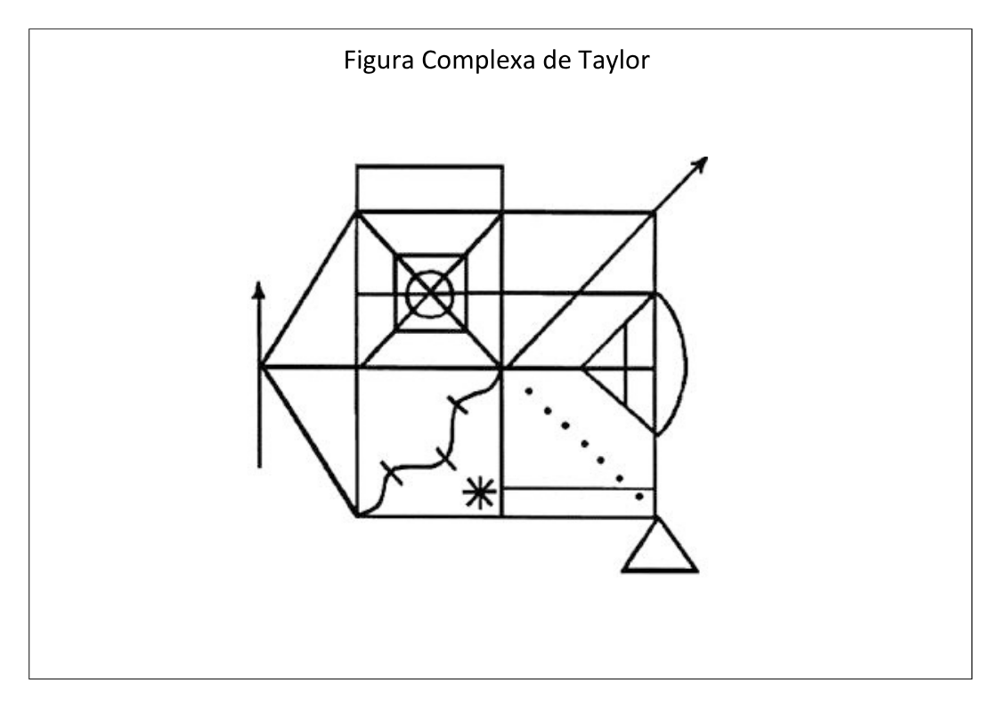

Teste Eletrônico da Figura Complexa de Taylor
Qual protocolo de memória deseja aplicar?
✅ 2 a 3 folhas A4 em branco (uma para cópia, outra(s) para memória)
✅ Lápis (tenha mais de um disponível, caso quebre a ponta)
✅ Borracha (opcional — alguns protocolos não permitem apagar)
💡 Instrução ao paciente (Cópia):
"Vou mostrar uma figura na tela. Quero que você copie essa figura o mais fielmente possível nesta folha. Não há limite de tempo, mas vou cronometrar."
💡 Instrução ao paciente (Memória):
"Agora, sem olhar a figura, desenhe tudo o que você se lembrar dela nesta outra folha."

FASE: MEMÓRIA IMEDIATA
Peça ao paciente para desenhar o que lembra da figura
INTERVALO — Aplique tarefas verbais durante este período
Aguarde o intervalo ou clique para iniciar a memória tardia quando pronto
FASE: MEMÓRIA TARDIA
Peça ao paciente para desenhar o que lembra da figura
Figura Complexa de Taylor — 18 elementos
| # | Elemento | Cópia | Mem. Im. | Mem. Ta. |
|---|---|---|---|---|
| TOTAL: | 0 | 0 | 0 | |